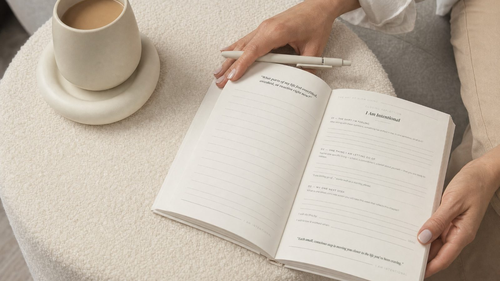
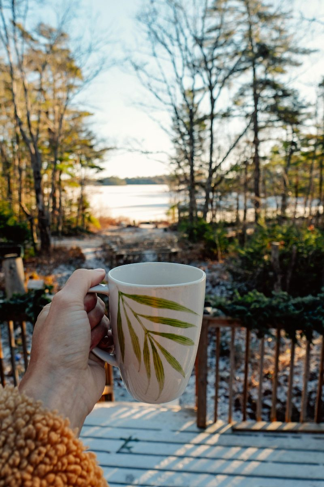
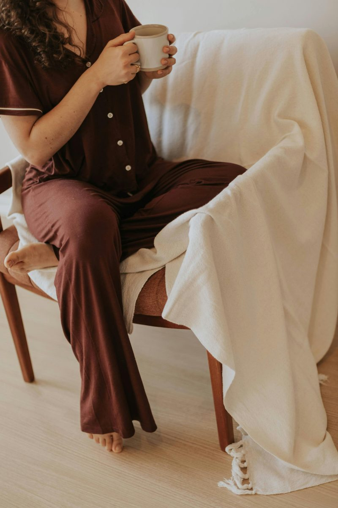

The Lead · Clarity
The morning brain dump that
changed how my evenings feel
A five-minute morning habit that clears the mental clutter before it follows you into your day — and why it works when willpower and good intentions haven’t.
“There comes a moment when something quietly says: this pace isn’t working anymore.”
More from this issue

IntentionalHow to build habits when your willpower has run out
If habit advice hasn’t worked for you, it’s probably not a willpower problem. The one idea that changed everything.

MindfulA slow morning routine that doesn’t require a 5am alarm
A slow morning isn’t about waking earlier. It’s about what your nervous system meets first.
 Mindful
Mindful
What my PCOS taught me about rest
Why rest stopped feeling like something I had to earn, and started feeling like something I actually needed.
IntentionalWhat a guided journal for slow living actually does
What I built, why I built it, and the four questions it’s quietly designed to help you answer.